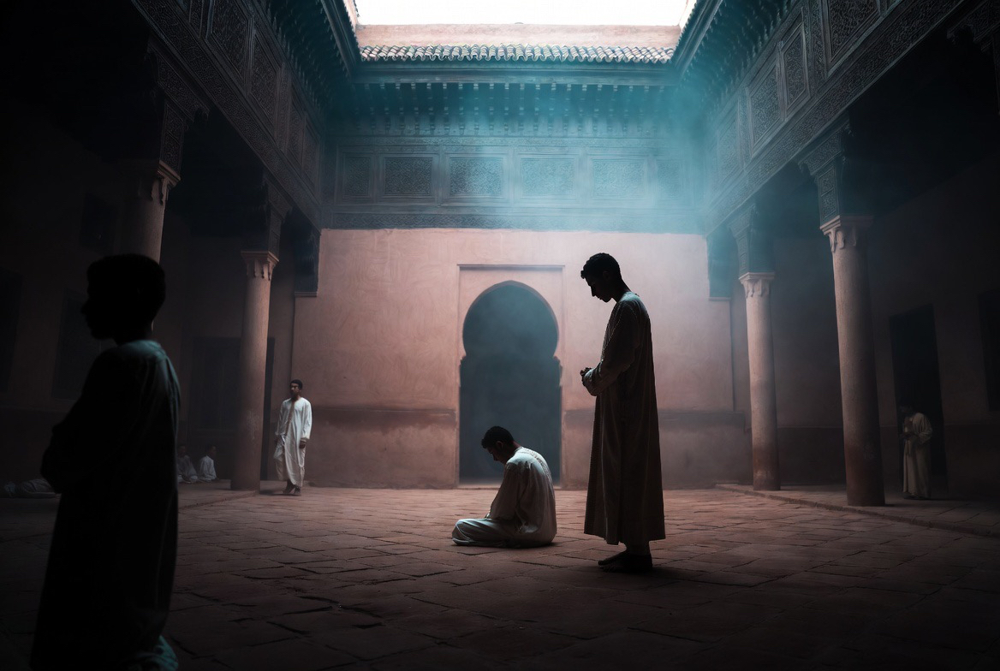

PRIÈRE CANONIQUE — AUBE
Fajr
L’aube. La maison se lève dans le silence. La prière ouvre le jour avant le bruit et avant le travail.
Puis le petit déjeuner frugal, et le début de l’étude : lecture, école coranique légère, attention au souffle et à la posture.
إذا أسفرَ الصبحُ المبينُ عن الدجى
نهضنا إلى ذكرِ الإلهِ مبادرينَ
« Quand l’aube claire dévoile l’obscurité,
nous nous levons prompts au rappel de Dieu. »
Ibn al-Fāriḍ — XIIe–XIIIe s.